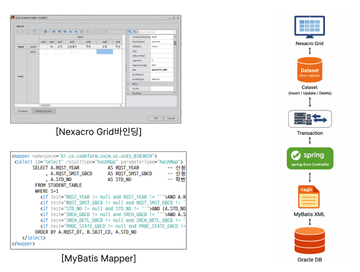
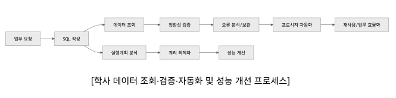

1. 업무 내용 Nexacro Grid 및 Dataset 기반 학사 데이터 조회/수정 화면 운영 Dataset-Transaction-MyBatis-DB로 이어지는 데이터 처리 흐름 관리 사용자 입력 데이터가 서버 및 DB에 정상 반영되도록 데이터 흐름 검증 및 보완 수강/학적/등록 등 주요 행정 데이터 처리 기능 유지보수 2. 수행 내용 데이터셋 변경 상태(추가/수정/삭제)에 따라 저장 처리 로직 구현 Transaction 기반 서버 연동 및 결과 데이터셋 재바인딩 처리 MyBatis(XML) 기반 데이터 조회·저장 로직 유지보수 화면–서버–DB 간 데이터 흐름 정합성 유지 및 오류 대응 3. 기술 Nexacro 17, MyBatis, Spring Boot, Oracle

1. 업무 내용 사용자 및 업무 요청에 따른 학사 데이터 조회 SQL 작성 및 분석 조회 결과의 정합성 검증 및 오류 데이터 원인 분석 반복 조회 및 검증 로직을 프로시저로 구성하여 자동화 대용량 데이터 조회 쿼리의 실행계획 분석 및 성능 개선 2. 수행 내용 요청 기반으로 학생, 학적, 수강, 등록 데이터 조회 SQL 작성 및 결과 분석 조회 결과 중 불일치·이상 데이터 검출 및 원인 추적 반복 조회·검증 로직을 프로시저로 구현하여 재사용 구조 구성 40만 건 이상 데이터 조회 시 조인 구조 및 조건 최적화로 성능 개선 3. 성과 데이터 조회 및 검증 처리 시간 단축 반복 요청 대응을 프로시저화하여 업무 효율 향상 대용량 조회 성능 개선으로 사용자 응답 속도 향상 4. 기술 Oracle SQL, PL/SQL, MyBatis, Spring Boot
